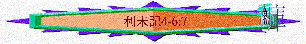

|
與神同住的人生──要聖潔(分別為聖歸於神) |
||||
|
人的奉獻--要蒙神悅納 |
人的生活--要分別出來 |
人的事奉--要尊神為聖 |
人的日子--要記念真神 |
人的產業--要歸神為聖 |
|
１－１０ |
１１－２０ |
２１－２２ |
２３－２４ |
２５－２７ |
一.人的奉獻----要蒙神悅納(1-10)
1.百姓的奉獻(1-6:7)
D.贖罪祭----贖罪的祭(4-5:13)
a.字義
「或是受膏的祭司犯罪，使百姓陷在罪裡，就當為他所犯的罪把沒有殘疾的公牛犢獻給耶和華為贖罪祭。」4:3
～「贖罪」在希伯來文一字的字根有「潔淨」意思，人獻上此祭，罪可得贖，人可得潔淨
b.條件
「你曉諭以色列人說：若有人在耶和華所吩咐不可行的什麼事上誤犯了一件。」4:2
「以色列全會眾若行了耶和華所吩咐不可行的什麼事，誤犯了罪，是隱而未現、會眾看不出來的，」4:13
「若有人聽見發誓的聲音（或作：若有人聽見叫人發誓的聲音），他本是見證，卻不把所看見的、所知道的說出來，這就是罪；他要擔當他的罪孽。或是有人摸了不潔的物，無論是不潔的死獸，是不潔的死畜，是不潔的死蟲，他卻不知道，因此成了不潔，就有了罪。或是他摸了別人的污穢，無論是染了什麼污穢，他卻不知道，一知道了就有了罪。或是有人嘴裡冒失發誓，要行惡，要行善，無論人在什麼事上冒失發誓，他卻不知道，一知道了就要在這其中的一件上有了罪。」5:1-4
～是誤犯的，不是故意的，若是該死的罪----例如姦淫(20:10)，殺人(民35:25-34)，頑梗悖逆及褻瀆聖名的罪(24:16)，不能用贖罪祭贖罪
～5:1-4更仔細講明一些罪要贖罪的：
(1)能作見證卻不說出來
(2)摸了別人的污穢
(3)摸了不潔的物
(4)冒失發誓
c.祭物
「或是受膏的祭司犯罪，使百姓陷在罪裡，就當為他所犯的罪把沒有殘疾的公牛犢獻給耶和華為贖罪祭。」4:3
「會眾一知道所犯的罪就要獻一隻公牛犢為贖罪祭，牽到會幕前。」4:14
「民中若有人行了耶和華所吩咐不可行的什麼事，誤犯了罪，」4:27
「人若牽一隻綿羊羔為贖罪祭的供物，必要牽一隻沒有殘疾的母羊，」4:32
「他的力量若不夠獻一隻羊羔，就要因所犯的罪，把兩隻斑鳩或是兩隻雛鴿帶到耶和華面前為贖愆祭：一隻作贖罪祭，一隻作燔祭。」5:7
「他的力量若不夠獻兩隻斑鳩或是兩隻雛鴿，就要因所犯的罪帶供物來，就是細麵伊法十分之一為贖罪祭；不可加上油，也不可加上乳香，因為是贖罪祭。」5:11
(1)公牛犢----祭司與會眾(所膏的祭司是指大祭司)
(2)公山羊----官長
(3)母山羊----平民
(4)綿羊羔----平民
(5)班鳩/雛鴿----貧民(二隻、一隻以燔祭方式獻上，另一隻以贖罪祭方式)
(6)生麵----力量仍不夠(但不加上油及乳香)
d.地點
「他要牽公牛到會幕門口，在耶和華面前按手在牛的頭上，把牛宰於耶和華面前。」4:4
～會幕門口：神面前
e.方式
「他要牽公牛到會幕門口，在耶和華面前按手在牛的頭上，把牛宰於耶和華面前。」4:4
「會中的長老就要在耶和華面前按手在牛的頭上，將牛在耶和華面前宰了。」4:15
「他要把供物帶到祭司那裡，祭司要取出自己的一把來作為紀念，按獻給耶和華火祭的條例燒在壇上；這是贖罪祭。」5:12
(1)犯罪的人(大祭司/會眾的代表----會中長老/官長/平民)
(A)在會幕門口獻上祭物
(B)按手在祭物身上
(C)把祭物宰了
(D)鳥側不用犯罪人處理，由祭司將鳥頭揪下(但不撕斷鳥)
(2)祭司----處理血和焚燒事情(若獻上是細麵，祭司取一把來獻在壇上)
f.血
「把指頭蘸於血中，在耶和華面前對著聖所的幔子彈血七次，又要把些血抹在會幕內、耶和華面前香壇的四角上，再把公牛所有的血倒在會幕門口、燔祭壇的腳那裡。」4:6-7
「祭司要用指頭蘸些贖罪祭牲的血，抹在燔祭壇的四角上，把血倒在燔祭壇的腳那裡。」4:25
「祭司要用指頭蘸些羊的血，抹在燔祭壇的四角上，所有的血都要倒在壇的腳那裡，」4:30
「祭司要用指頭蘸些贖罪祭牲的血，抹在燔祭壇的四角上，所有的血都要倒在壇的腳那裡，」4:34
(1)公牛犢(大祭司及全會眾)
(A)血彈在內幔前(通向神之路)
(B)抺在香壇的四角(與神交通之地)
(C)剩餘倒在祭壇的腳那裏(奉獻之地)
～大祭司是代表百姓的，進到內幔，香壇之地，他與全會眾就代表以色列民，他們犯罪，令通向神之路，及與神交通及奉獻必有所阻隔，需用血來得潔淨，使神與人得相通
(2)公山羊、母山羊、綿羊羔(官長及平民)
(A)抺在祭壇的四角上
(B)剩餘的倒在祭壇的腳
(3)班鳩與雛鴿(平民)
(A)彈在祭壇旁邊
(B)剩餘的倒在祭壇腳下
g.焚燒
「要把贖罪祭公牛所有的脂油，乃是蓋臟的脂油和臟上所有的脂油，並兩個腰子和腰子上的脂油，就是靠腰兩旁的脂油，與肝上的網子和腰子，一概取下，與平安祭公牛上所取的一樣；祭司要把這些燒在燔祭的壇上。」4:8-10
「把牛所有的脂油都取下，燒在壇上；收拾這牛，與那贖罪祭的牛一樣。祭司要為他們贖罪，他們必蒙赦免。」4:19-20
「收拾這牛，與那贖罪祭的牛一樣。祭司要為他們贖罪，他們必蒙赦免。」4:20
「把這些帶到祭司那裡，祭司就要先把那贖罪祭獻上，從鳥的頸項上揪下頭來，只是不可把鳥撕斷，」5:8
「他要把供物帶到祭司那裡，祭司要取出自己的一把來作為紀念，按獻給耶和華火祭的條例燒在壇上；這是贖罪祭。」5:12
(1)公牛犢、公山羊、母山羊
～一切的脂油和腰子
(2)綿羊羔
～一切的脂油和腰子、並整條肥尾巴
(3)一隻鳥
～整隻全燒
(4)生麵
～一把
h.剩餘
「就是全公牛，要搬到營外潔淨之地、倒灰之所，用火燒在柴上。」4:12
「他要把牛搬到營外燒了，像燒頭一個牛一樣；這是會眾的贖罪祭。」4:21
「為贖罪獻這祭的祭司要吃，要在聖處，就是在會幕的院子裡吃。」6:26
(1)公牛犢----全燒在營外
～整個公牛犢代表大祭司與百姓的罪，是不潔淨的，要燒在營外
～也代表主要在聖殿外被殺(祂成為贖罪祭)
(2)公山羊、母山羊、羔羊----全祭牲要給祭司，祭司要吃在聖處
～代表祭司擔當獻祭的罪
(3)另一隻鳥及細麵----歸祭司
i.意義
(1)為個人贖罪
「民中若有人行了耶和華所吩咐不可行的什麼事，誤犯了罪，」4:27
(2)為整體贖罪
「以色列全會眾若行了耶和華所吩咐不可行的什麼事，誤犯了罪，是隱而未現、會眾看不出來的，」4:13
j.果效----必得赦免
「收拾這牛，與那贖罪祭的牛一樣。祭司要為他們贖罪，他們必蒙赦免。」4:20
k.真理----贖罪的祭
(1)一件也要贖罪
「你曉諭以色列人說：若有人在耶和華所吩咐不可行的什麼事上誤犯了一件，」4:2
(2)要立即處理罪
「會眾一知道所犯的罪就要獻一隻公牛犢為贖罪祭，牽到會幕前。」4:14
(3)要到神前處理
「他要牽公牛到會幕門口，在耶和華面前按手在牛的頭上，把牛宰於耶和華面前。」4:4
(4)要用祭物犠牲
「或是受膏的祭司犯罪，使百姓陷在罪裡，就當為他所犯的罪把沒有殘疾的公牛犢獻給耶和華為贖罪祭。」4:3
～基督也成為祭物，為我們犠牲
(5)要用血來贖罪
「又要把些血抹在會幕內、耶和華面前香壇的四角上，再把公牛所有的血倒在會幕門口、燔祭壇的腳那裡。」4:7
「按著律法，凡物差不多都是用血潔淨的；若不流血，罪就不得赦免了。」來9:22
～贖罪祭的重點是血，若不流血，罪就不得赦免，基督也用血赦免我們的罪
(6)要憑信心得赦
「他要牽公牛到會幕門口，在耶和華面前按手在牛的頭上，把牛宰於耶和華面前。」4:4
「所有的脂油，祭司都要燒在壇上，正如平安祭的脂油一樣。至於他的罪，祭司要為他贖了，他必蒙赦免。」4:26
～他要按手在祭牲的頭上，要信祭牲可代他承擔罪的刑罰，他的罪終得赦免
(7)罪也分輕與重
～似乎大祭司比平民所承擔的更大！所以獻的供物及血的處理，比平民有不同的
l.預表
(1)基督是無罪的，卻擔當我們的罪
「神使那無罪（無罪：原文作不知罪）的，替我們成為罪，好叫我們在他裡面成為神的義。」林後5:21
(2)祂把自己獻祭，替我們贖罪
「如果這樣，他從創世以來，就必多次受苦了。但如今在這末世顯現一次，把自己獻為祭，好除掉罪。按著定命，人人都有一死，死後且有審判。像這樣，基督既然一次被獻，擔當了多人的罪，將來要向那等候他的人第二次顯現，並與罪無關，乃是為拯救他們。」來9:26-28
E.贖愆祭----贖罪的祭(5:14-6:7)
～贖罪祭與贖愆祭有時很難分辨，似乎前者重點是得罪了神，與神的關係上出現了問題，後者可能是得罪了人及干犯了聖物，在可評估下，某些情況要賠償
a.字義
～「愆」有過失，罪過的意思，人做錯了事，對人有過失應怎樣得赦免呢？
b.祭物
「人若在耶和華的聖物上誤犯了罪，有了過犯，就要照你所估的，按聖所的舍客勒拿銀子，將贖愆祭牲就是羊群中一隻沒有殘疾的公綿羊牽到耶和華面前為贖愆祭；並且他因在聖物上的差錯要償還，另外加五分之一，都給祭司。祭司要用贖愆祭的公綿羊為他贖罪，他必蒙赦免。「若有人犯罪，行了耶和華所吩咐不可行的什麼事，他雖然不知道，還是有了罪，就要擔當他的罪孽；也要照你所估定的價，從羊群中牽一隻沒有殘疾的公綿羊來，給祭司作贖愆祭。至於他誤行的那錯事，祭司要為他贖罪，他必蒙赦免。」5:15-18
～公綿羊
c.條件及賠償
(1)誤犯聖物----例如誤吃聖物，不納十分一，不贖頭生
「人若在耶和華的聖物上誤犯了罪，有了過犯，就要照你所估的，按聖所的舍客勒拿銀子，將贖愆祭牲就是羊群中一隻沒有殘疾的公綿羊牽到耶和華面前為贖愆祭；」5:15
～就要用銀子作賠償(按祭司所定的價格)
(2)良心不安
「若有人犯罪，行了耶和華所吩咐不可行的什麼事，他雖然不知道，還是有了罪，就要擔當他的罪孽；」5:17
～他不知道自己犯了甚麼，但良心有不安(猶太人稱懷疑罪)
～不用賠償
(3)虧負別人
「耶和華曉諭摩西說：「若有人犯罪，干犯耶和華，在鄰舍交付他的物上，或是在交易上行了詭詐，或是搶奪人的財物，或是欺壓鄰舍，或是在撿了遺失的物上行了詭詐，說謊起誓，在這一切的事上犯了什麼罪；」6:1-3
「或是他因什麼物起了假誓，就要如數歸還，另外加上五分之一，在查出他有罪的日子要交還本主。」6:5
(A)虧負之事
～鄰舍交付他的物上行了詭詐
～交易上行了詭詐
～搶奪人的財物
～欺壓鄰舍
～檢了遺失之物行之詭詐(可能說謊，沒有拾取過)
～說謊起誓
(B)賠賞
～如數歸還
～另加五分之一
d.方式、血、焚燒、剩餘
「贖愆祭的條例乃是如此：這祭是至聖的。人在那裡宰燔祭牲，也要在那裡宰贖愆祭牲；其血，祭司要灑在壇的周圍。又要將肥尾巴和蓋臟的脂油，」7:1-3
「贖罪祭怎樣，贖愆祭也是怎樣，兩個祭是一個條例。獻贖愆祭贖罪的祭司要得這祭物。」7:7
～和贖罪祭獻綿羊羔的方式一樣，一切脂油和腰子，並整肥尾巴獻給神，血則灑在燔祭壇的周圍，其餘的祭物歸祭司
e.意義
(1)求神赦免
「祭司要在耶和華面前為他贖罪；他無論行了什麼事，使他有了罪，都必蒙赦免。」6:7
(2)賠償別人
f.果效
「祭司要在耶和華面前為他贖罪；他無論行了什麼事，使他有了罪，都必蒙赦免。」6:7
～神必赦免
g.真理----贖罪的祭
「凡事都不可虧欠人，惟有彼此相愛要常以為虧欠；因為愛人的，就完全了律法。」羅13:8
～當虧負了別人時
(1)要求神赦免
(2)要不虧負人(歸還對方所損失的物)
(3)要加以賠償
h.預表
「因為世人都犯了罪，虧缺了神的榮耀；如今卻蒙神的恩典，因基督耶穌的救贖，就白白的稱義。神設立耶穌作挽回祭，是憑著耶穌的血，藉著人的信，要顯明神的義；因為他用忍耐的心寬容人先時所犯的罪，」羅3:23-25
「你們從前在過犯和未受割禮的肉體中死了，神赦免了你們（或作：我們）一切過犯，便叫你們與基督一同活過來；又塗抹了在律例上所寫攻擊我們，有礙於我們的字據，把他撤去，釘在十字架上。」西2:13-14
「他被掛在木頭上，親身擔當了我們的罪，使我們既然在罪上死，就得以在義上活。因他受的鞭傷，你們便得了醫治。」彼前2:24
～基督在神面前補足我們的虧欠